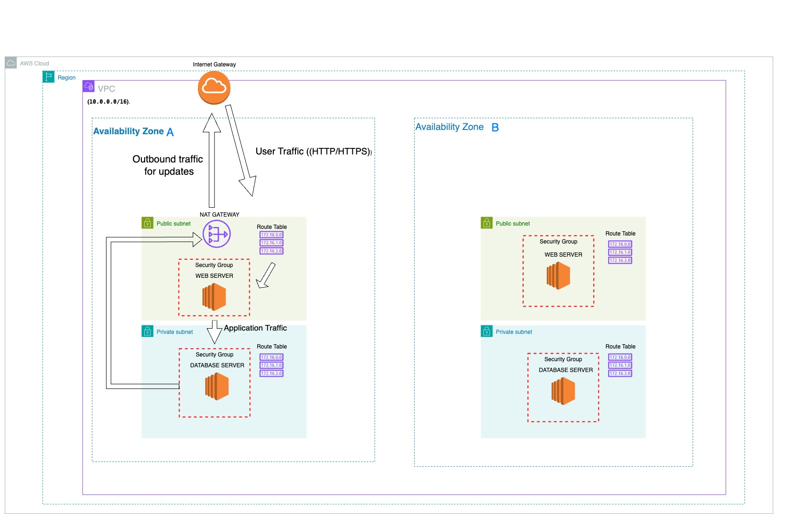

Project 3: A Secure and Private Network Foundation
Building a custom Amazon VPC from scratch with public and private subnets to protect backend resources.
The Goal
The goal of this project was to design and implement a secure network foundation in AWS. This required creating a custom Virtual Private Cloud (VPC) with separate subnets to ensure that sensitive resources, like a database server, are completely isolated from the public internet while still being accessible by the application tier.
The Architecture
I built a multi-AZ VPC using the AWS Management Console. The architecture follows the principle of "defense in depth" by using multiple layers of security and routing controls.
Key components include:
- Virtual Private Cloud (VPC): A logically isolated section of the AWS Cloud.
- Public & Private Subnets: I created public subnets for internet-facing resources and private subnets for backend resources.
- Internet Gateway (IGW): Allows resources in the public subnets to communicate with the internet.
- NAT Gateway: Allows resources in the private subnets to initiate outbound connections for software updates.
- Security Groups: Act as stateful firewalls at the instance level to control traffic between tiers.
The Test: Verifying Connectivity and Security
To validate the architecture, I launched two EC2 instances: a "Web Server" in a public subnet and a "Database Server" in a private subnet. I then used EC2 Instance Connect and the ping command to prove that the web server could communicate with the database server, and that the security groups were correctly blocking and allowing traffic as intended.